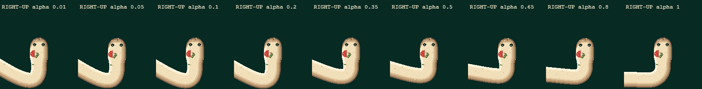
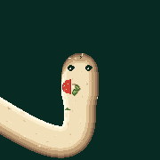
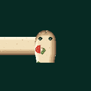
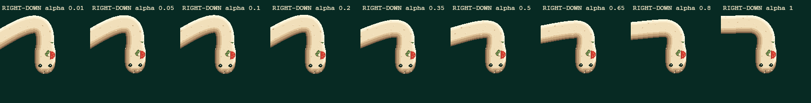
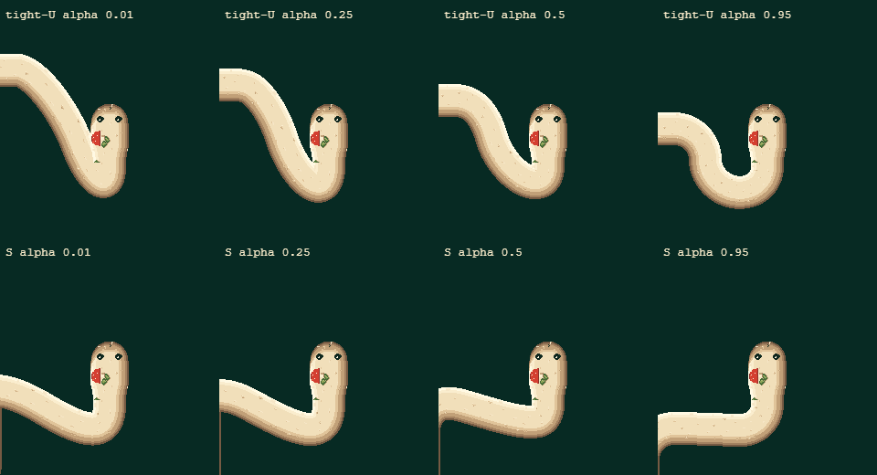
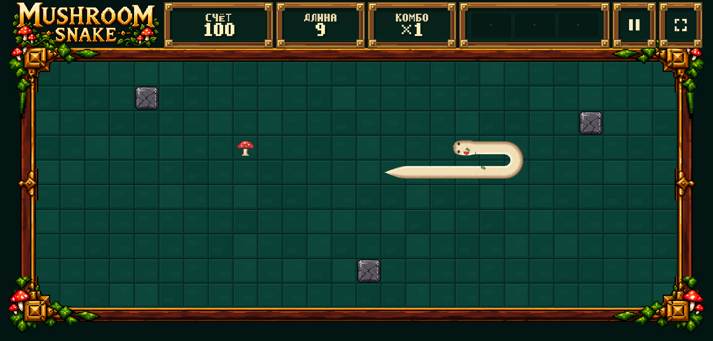
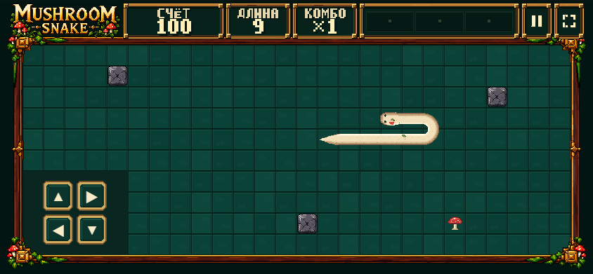

SMOOTH V2.1 — socket proof
QA FAIL / NOT APPROVED. Задний socket соединён, но tight U расширяет общий attachment envelope с 36 до 42 px. Обычный Training оставлен на approved V2. Не GAME FEEL LOCK.
Играть в неутверждённый DEV proof — SMOOTH V2.1 / GRID SNAP · Approved V2 · Полный отчёт
Cell 68 / BODY 36 / head 42 / terminal 68; art не изменён. Socket: 32 px за центром, скрытый underlap 2 px, lead 6 px. 808 alpha-состояний: gap/cut 0. 144 stress samples: 20 width FAIL в tight U. RGBA boundary 0; targeted live hash mismatches 0, console/network errors 0. 1. RIGHT → UP, девять alpha-состояний. Native 100%, горизонтальный scroll. 
Worst baseline alpha 0.01 — native rear socket → neck detail (180×180, без увеличения) 
До исправления, тот же участок: rear полностью открыт, тело касается головы сбоку.

2. RIGHT → DOWN — native 100%. 
3. Tight U / S — native 100%. Именно tight U пока не проходит width gate. 
4. Actual desktop gameplay — viewport 1920×1080, embedded cabinet capture. 
5. Actual mobile gameplay — viewport 844×390, CSS/native screenshot. 
STOP. Это диагностический checkpoint, не завершённый fix и не visual approval. TEST/Production не публиковались.